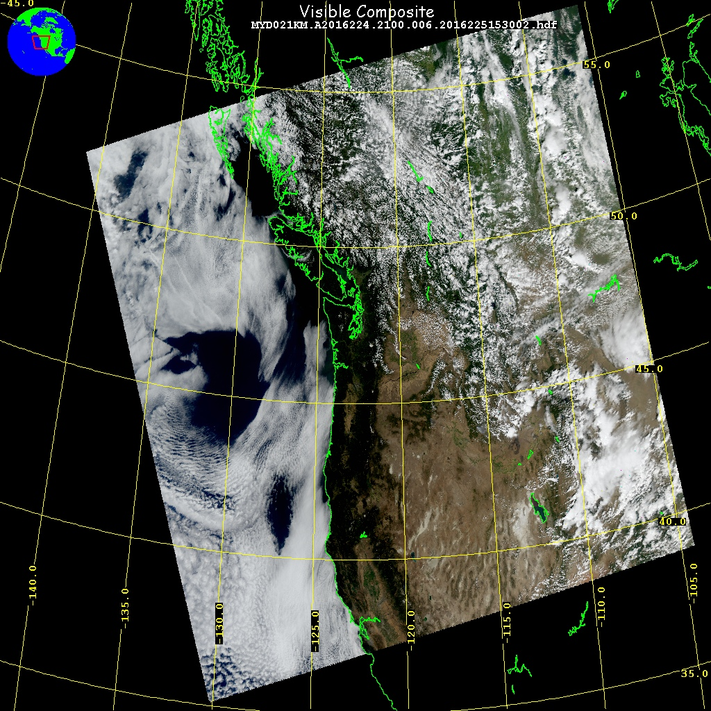

9.1. NDVI for Vancouver¶
One of the most important MODIS level 2 products for land remote sensing is the Normalized difference vegetation index
Visible red (channel 1) and nearir (Channel 2) reflectivities at 250 meter resolution
Since 250 meter resolution channels are so big, this notebook reads a subset of a Vancouver scene. Channel 1 and Channel 2 are stored as 1 dimensional vectors, since all we are doing here is histogramming. No need for pyresample or lats/lons.
Band 1 centered at 0.645 microns (red), Band 2 at 0.85 microns (nearir)
data acquired at 250 m resolution, August 11, 2016
I’ve written the measurements between -125 -> -120 deg lon and 45-50 degrees lat to an hdf: vancouver_hires.h5, download in the cell below
see what the ndvi histogram looks like at 250 meter resoluiton
import numpy as np
import h5py
import sys
import a301_lib
import matplotlib
from matplotlib import pyplot as plt
import sat_lib.hdftools.h5dump as h5dump
from sat_lib.modismeta_read import parseMeta
from sat_lib.geometry import get_proj_params
import cartopy
#
# use hdfview to see the structure of this file
#
filename = a301_lib.sat_data / 'vancouver_hires.h5'
******************************
context imported. Front of path:
/home/phil/work
in sat_lib init
h5dump.main(filename)
opening /home/phil/work/sat_data/vancouver_hires.h5
++++++++++++++++++++
found the following top-level items:
data_fields: <HDF5 group "/data_fields" (2 members)>
latlon: <HDF5 group "/latlon" (2 members)>
++++++++++++++++++++
_______________
root group object <HDF5 group "/data_fields" (2 members)>
_______________
member of group: /data_fields: <HDF5 dataset "chan1": shape (2469, 715), type "<f4">
descrip: MODIS chan1 reflectivity at 250 meter resolution
member of group: /data_fields: <HDF5 dataset "chan2": shape (2469, 715), type "<f4">
descrip: MODIS chan2 reflectivity at 250 meter resolution
_______________
root group object <HDF5 group "/latlon" (2 members)>
_______________
member of group: /latlon: <HDF5 dataset "lat": shape (2469, 715), type "<f4">
descrip: latitude, degrees N
member of group: /latlon: <HDF5 dataset "lon": shape (2469, 715), type "<f4">
descrip: longitude, degrees E
-------------------
attributes for the root file
-------------------
attribute name: CoreMetadata.0 --- value:
GROUP = INVENTORYMETADATA
GROUPTYPE = MASTERGROUP
GROUP = ECSDATAGRANULE
OBJECT = REPROCESSINGPLANNED
NUM_VAL = 1
VALUE = "further update is anticipated"
END_OBJECT = REPROCESSINGPLANNED
OBJECT = REPROCESSINGACTUAL
NUM_VAL = 1
VALUE = "processed once"
END_OBJECT = REPROCESSINGACTUAL
OBJECT = LOCALGRANULEID
NUM_VAL = 1
VALUE = "MYD02QKM.A2016224.2100.006.2016225153002.hdf"
END_OBJECT = LOCALGRANULEID
OBJECT = DAYNIGHTFLAG
NUM_VAL = 1
VALUE = "Day"
END_OBJECT = DAYNIGHTFLAG
OBJECT = PRODUCTIONDATETIME
NUM_VAL = 1
VALUE = "2016-08-12T15:30:02.000Z"
END_OBJECT = PRODUCTIONDATETIME
END_GROUP = ECSDATAGRANULE
GROUP = MEASUREDPARAMETER
OBJECT = MEASUREDPARAMETERCONTAINER
CLASS = "1"
OBJECT = PARAMETERNAME
CLASS = "1"
NUM_VAL = 1
VALUE = "EV_250_RefSB"
END_OBJECT = PARAMETERNAME
GROUP = QAFLAGS
CLASS = "1"
OBJECT = AUTOMATICQUALITYFLAG
NUM_VAL = 1
CLASS = "1"
VALUE = "Suspect"
END_OBJECT = AUTOMATICQUALITYFLAG
OBJECT = AUTOMATICQUALITYFLAGEXPLANATION
NUM_VAL = 1
CLASS = "1"
VALUE = "not being investigated"
END_OBJECT = AUTOMATICQUALITYFLAGEXPLANATION
OBJECT = SCIENCEQUALITYFLAG
NUM_VAL = 1
VALUE = "Not Investigated"
CLASS = "1"
END_OBJECT = SCIENCEQUALITYFLAG
END_GROUP = QAFLAGS
GROUP = QASTATS
CLASS = "1"
OBJECT = QAPERCENTINTERPOLATEDDATA
NUM_VAL = 1
CLASS = "1"
VALUE = 0
END_OBJECT = QAPERCENTINTERPOLATEDDATA
OBJECT = QAPERCENTMISSINGDATA
NUM_VAL = 1
CLASS = "1"
VALUE = 0
END_OBJECT = QAPERCENTMISSINGDATA
OBJECT = QAPERCENTOUTOFBOUNDSDATA
NUM_VAL = 1
CLASS = "1"
VALUE = 1
END_OBJECT = QAPERCENTOUTOFBOUNDSDATA
END_GROUP = QASTATS
END_OBJECT = MEASUREDPARAMETERCONTAINER
END_GROUP = MEASUREDPARAMETER
GROUP = ORBITCALCULATEDSPATIALDOMAIN
OBJECT = ORBITCALCULATEDSPATIALDOMAINCONTAINER
CLASS = "1"
OBJECT = ORBITNUMBER
CLASS = "1"
NUM_VAL = 1
VALUE = 75924
END_OBJECT = ORBITNUMBER
OBJECT = EQUATORCROSSINGLONGITUDE
CLASS = "1"
NUM_VAL = 1
VALUE = 59.0673028549488
END_OBJECT = EQUATORCROSSINGLONGITUDE
OBJECT = EQUATORCROSSINGTIME
CLASS = "1"
NUM_VAL = 1
VALUE = "21:38:57.889523"
END_OBJECT = EQUATORCROSSINGTIME
OBJECT = EQUATORCROSSINGDATE
CLASS = "1"
NUM_VAL = 1
VALUE = "2016-08-11"
END_OBJECT = EQUATORCROSSINGDATE
END_OBJECT = ORBITCALCULATEDSPATIALDOMAINCONTAINER
END_GROUP = ORBITCALCULATEDSPATIALDOMAIN
GROUP = COLLECTIONDESCRIPTIONCLASS
OBJECT = SHORTNAME
NUM_VAL = 1
VALUE = "MYD02QKM"
END_OBJECT = SHORTNAME
OBJECT = VERSIONID
NUM_VAL = 1
VALUE = 6
END_OBJECT = VERSIONID
END_GROUP = COLLECTIONDESCRIPTIONCLASS
GROUP = INPUTGRANULE
OBJECT = INPUTPOINTER
NUM_VAL = 10
VALUE = ("MYD01.A2016224.2055.006.2016225152321.hdf", "MYD01.A2016224.2100.006.2016225152230.hdf", "MYD01.A2016224.2105.006.2016225152234.hdf", "MYD02_Reflective_LUTs.hdf.V6.1.35.20", "MYD02_Emissive_LUTs.hdf.V6.1.35.20", "MYD02_QA_LUTs.hdf.V6.1.35.20")
END_OBJECT = INPUTPOINTER
END_GROUP = INPUTGRANULE
GROUP = SPATIALDOMAINCONTAINER
GROUP = HORIZONTALSPATIALDOMAINCONTAINER
GROUP = GPOLYGON
OBJECT = GPOLYGONCONTAINER
CLASS = "1"
GROUP = GRING
CLASS = "1"
OBJECT = EXCLUSIONGRINGFLAG
NUM_VAL = 1
CLASS = "1"
VALUE = "N"
END_OBJECT = EXCLUSIONGRINGFLAG
END_GROUP = GRING
GROUP = GRINGPOINT
CLASS = "1"
OBJECT = GRINGPOINTLONGITUDE
NUM_VAL = 4
CLASS = "1"
VALUE = (-103.903247242076, -130.13173308195, -141.303105914931, -105.708729788342)
END_OBJECT = GRINGPOINTLONGITUDE
OBJECT = GRINGPOINTLATITUDE
NUM_VAL = 4
CLASS = "1"
VALUE = (38.835099981284, 35.1191874065048, 51.6555121101626, 57.1392579098083)
END_OBJECT = GRINGPOINTLATITUDE
OBJECT = GRINGPOINTSEQUENCENO
NUM_VAL = 4
CLASS = "1"
VALUE = (1, 2, 3, 4)
END_OBJECT = GRINGPOINTSEQUENCENO
END_GROUP = GRINGPOINT
END_OBJECT = GPOLYGONCONTAINER
END_GROUP = GPOLYGON
END_GROUP = HORIZONTALSPATIALDOMAINCONTAINER
END_GROUP = SPATIALDOMAINCONTAINER
GROUP = RANGEDATETIME
OBJECT = RANGEBEGINNINGTIME
NUM_VAL = 1
VALUE = "21:00:00.000000"
END_OBJECT = RANGEBEGINNINGTIME
OBJECT = RANGEENDINGTIME
NUM_VAL = 1
VALUE = "21:05:00.000000"
END_OBJECT = RANGEENDINGTIME
OBJECT = RANGEBEGINNINGDATE
NUM_VAL = 1
VALUE = "2016-08-11"
END_OBJECT = RANGEBEGINNINGDATE
OBJECT = RANGEENDINGDATE
NUM_VAL = 1
VALUE = "2016-08-11"
END_OBJECT = RANGEENDINGDATE
END_GROUP = RANGEDATETIME
GROUP = PGEVERSIONCLASS
OBJECT = PGEVERSION
NUM_VAL = 1
VALUE = "6.1.35"
END_OBJECT = PGEVERSION
END_GROUP = PGEVERSIONCLASS
GROUP = ANCILLARYINPUTGRANULE
OBJECT = ANCILLARYINPUTGRANULECONTAINER
CLASS = "1"
OBJECT = ANCILLARYINPUTTYPE
CLASS = "1"
NUM_VAL = 1
VALUE = "Geolocation"
END_OBJECT = ANCILLARYINPUTTYPE
OBJECT = ANCILLARYINPUTPOINTER
CLASS = "1"
NUM_VAL = 1
VALUE = "MYD03.A2016224.2100.006.2016225152335.hdf"
END_OBJECT = ANCILLARYINPUTPOINTER
END_OBJECT = ANCILLARYINPUTGRANULECONTAINER
END_GROUP = ANCILLARYINPUTGRANULE
GROUP = ASSOCIATEDPLATFORMINSTRUMENTSENSOR
OBJECT = ASSOCIATEDPLATFORMINSTRUMENTSENSORCONTAINER
CLASS = "1"
OBJECT = ASSOCIATEDSENSORSHORTNAME
CLASS = "1"
NUM_VAL = 1
VALUE = "MODIS"
END_OBJECT = ASSOCIATEDSENSORSHORTNAME
OBJECT = ASSOCIATEDPLATFORMSHORTNAME
CLASS = "1"
NUM_VAL = 1
VALUE = "Aqua"
END_OBJECT = ASSOCIATEDPLATFORMSHORTNAME
OBJECT = ASSOCIATEDINSTRUMENTSHORTNAME
CLASS = "1"
NUM_VAL = 1
VALUE = "MODIS"
END_OBJECT = ASSOCIATEDINSTRUMENTSHORTNAME
END_OBJECT = ASSOCIATEDPLATFORMINSTRUMENTSENSORCONTAINER
END_GROUP = ASSOCIATEDPLATFORMINSTRUMENTSENSOR
GROUP = ADDITIONALATTRIBUTES
OBJECT = ADDITIONALATTRIBUTESCONTAINER
CLASS = "1"
OBJECT = ADDITIONALATTRIBUTENAME
CLASS = "1"
NUM_VAL = 1
VALUE = "AveragedBlackBodyTemperature"
END_OBJECT = ADDITIONALATTRIBUTENAME
GROUP = INFORMATIONCONTENT
CLASS = "1"
OBJECT = PARAMETERVALUE
NUM_VAL = 1
CLASS = "1"
VALUE = " 284.99"
END_OBJECT = PARAMETERVALUE
END_GROUP = INFORMATIONCONTENT
END_OBJECT = ADDITIONALATTRIBUTESCONTAINER
OBJECT = ADDITIONALATTRIBUTESCONTAINER
CLASS = "2"
OBJECT = ADDITIONALATTRIBUTENAME
CLASS = "2"
NUM_VAL = 1
VALUE = "AveragedMirrorTemperature"
END_OBJECT = ADDITIONALATTRIBUTENAME
GROUP = INFORMATIONCONTENT
CLASS = "2"
OBJECT = PARAMETERVALUE
NUM_VAL = 1
CLASS = "2"
VALUE = " 273.61"
END_OBJECT = PARAMETERVALUE
END_GROUP = INFORMATIONCONTENT
END_OBJECT = ADDITIONALATTRIBUTESCONTAINER
OBJECT = ADDITIONALATTRIBUTESCONTAINER
CLASS = "3"
OBJECT = ADDITIONALATTRIBUTENAME
CLASS = "3"
NUM_VAL = 1
VALUE = "AveragedFocalPlane1Temperature"
END_OBJECT = ADDITIONALATTRIBUTENAME
GROUP = INFORMATIONCONTENT
CLASS = "3"
OBJECT = PARAMETERVALUE
NUM_VAL = 1
CLASS = "3"
VALUE = " 267.92"
END_OBJECT = PARAMETERVALUE
END_GROUP = INFORMATIONCONTENT
END_OBJECT = ADDITIONALATTRIBUTESCONTAINER
OBJECT = ADDITIONALATTRIBUTESCONTAINER
CLASS = "4"
OBJECT = ADDITIONALATTRIBUTENAME
CLASS = "4"
NUM_VAL = 1
VALUE = "AveragedFocalPlane2Temperature"
END_OBJECT = ADDITIONALATTRIBUTENAME
GROUP = INFORMATIONCONTENT
CLASS = "4"
OBJECT = PARAMETERVALUE
NUM_VAL = 1
CLASS = "4"
VALUE = " 268.10"
END_OBJECT = PARAMETERVALUE
END_GROUP = INFORMATIONCONTENT
END_OBJECT = ADDITIONALATTRIBUTESCONTAINER
OBJECT = ADDITIONALATTRIBUTESCONTAINER
CLASS = "5"
OBJECT = ADDITIONALATTRIBUTENAME
CLASS = "5"
NUM_VAL = 1
VALUE = "AveragedFocalPlane3Temperature"
END_OBJECT = ADDITIONALATTRIBUTENAME
GROUP = INFORMATIONCONTENT
CLASS = "5"
OBJECT = PARAMETERVALUE
NUM_VAL = 1
CLASS = "5"
VALUE = " 83.09"
END_OBJECT = PARAMETERVALUE
END_GROUP = INFORMATIONCONTENT
END_OBJECT = ADDITIONALATTRIBUTESCONTAINER
OBJECT = ADDITIONALATTRIBUTESCONTAINER
CLASS = "6"
OBJECT = ADDITIONALATTRIBUTENAME
CLASS = "6"
NUM_VAL = 1
VALUE = "AveragedFocalPlane4Temperature"
END_OBJECT = ADDITIONALATTRIBUTENAME
GROUP = INFORMATIONCONTENT
CLASS = "6"
OBJECT = PARAMETERVALUE
NUM_VAL = 1
CLASS = "6"
VALUE = " 82.97"
END_OBJECT = PARAMETERVALUE
END_GROUP = INFORMATIONCONTENT
END_OBJECT = ADDITIONALATTRIBUTESCONTAINER
OBJECT = ADDITIONALATTRIBUTESCONTAINER
CLASS = "7"
OBJECT = ADDITIONALATTRIBUTENAME
CLASS = "7"
NUM_VAL = 1
VALUE = "CalibrationQuality"
END_OBJECT = ADDITIONALATTRIBUTENAME
GROUP = INFORMATIONCONTENT
CLASS = "7"
OBJECT = PARAMETERVALUE
NUM_VAL = 1
CLASS = "7"
VALUE = "marginal"
END_OBJECT = PARAMETERVALUE
END_GROUP = INFORMATIONCONTENT
END_OBJECT = ADDITIONALATTRIBUTESCONTAINER
OBJECT = ADDITIONALATTRIBUTESCONTAINER
CLASS = "8"
OBJECT = ADDITIONALATTRIBUTENAME
CLASS = "8"
NUM_VAL = 1
VALUE = "MissionPhase"
END_OBJECT = ADDITIONALATTRIBUTENAME
GROUP = INFORMATIONCONTENT
CLASS = "8"
OBJECT = PARAMETERVALUE
NUM_VAL = 1
CLASS = "8"
VALUE = "EXECUTION"
END_OBJECT = PARAMETERVALUE
END_GROUP = INFORMATIONCONTENT
END_OBJECT = ADDITIONALATTRIBUTESCONTAINER
OBJECT = ADDITIONALATTRIBUTESCONTAINER
CLASS = "9"
OBJECT = ADDITIONALATTRIBUTENAME
CLASS = "9"
NUM_VAL = 1
VALUE = "NadirPointing"
END_OBJECT = ADDITIONALATTRIBUTENAME
GROUP = INFORMATIONCONTENT
CLASS = "9"
OBJECT = PARAMETERVALUE
NUM_VAL = 1
CLASS = "9"
VALUE = "Y"
END_OBJECT = PARAMETERVALUE
END_GROUP = INFORMATIONCONTENT
END_OBJECT = ADDITIONALATTRIBUTESCONTAINER
OBJECT = ADDITIONALATTRIBUTESCONTAINER
CLASS = "10"
OBJECT = ADDITIONALATTRIBUTENAME
CLASS = "10"
NUM_VAL = 1
VALUE = "identifier_product_doi"
END_OBJECT = ADDITIONALATTRIBUTENAME
GROUP = INFORMATIONCONTENT
CLASS = "10"
OBJECT = PARAMETERVALUE
NUM_VAL = 1
CLASS = "10"
VALUE = "10.5067/MODIS/MYD02QKM.006"
END_OBJECT = PARAMETERVALUE
END_GROUP = INFORMATIONCONTENT
END_OBJECT = ADDITIONALATTRIBUTESCONTAINER
OBJECT = ADDITIONALATTRIBUTESCONTAINER
CLASS = "11"
OBJECT = ADDITIONALATTRIBUTENAME
CLASS = "11"
NUM_VAL = 1
VALUE = "identifier_product_doi_authority"
END_OBJECT = ADDITIONALATTRIBUTENAME
GROUP = INFORMATIONCONTENT
CLASS = "11"
OBJECT = PARAMETERVALUE
NUM_VAL = 1
CLASS = "11"
VALUE = "http://dx.doi.org"
END_OBJECT = PARAMETERVALUE
END_GROUP = INFORMATIONCONTENT
END_OBJECT = ADDITIONALATTRIBUTESCONTAINER
END_GROUP = ADDITIONALATTRIBUTES
END_GROUP = INVENTORYMETADATA
END
attribute name: history --- value: processed by trim_file.py
attribute name: lat_0 --- value: 47.49906921386719
attribute name: lon_0 --- value: -122.72850036621094
attribute name: orig_file --- value: MYD02QKM.A2016224.2100.006.2016225153002.h5
Here is the corresponding red,green,blue color composite for the granule.
9.1.1. Histogram¶
Now histogram the NDVI for the Vancouver box – note the range of NDVI – lots of vegetation (0.8) and some water (less than 0)
with h5py.File(filename,'r') as h5_file:
chan1_refl=h5_file['data_fields']['chan1'][...]
chan2_refl=h5_file['data_fields']['chan2'][...]
lats=h5_file['latlon']['lat'][...]
lons=h5_file['latlon']['lon'][...]
lat_0 = h5_file.attrs['lat_0']
lon_0 = h5_file.attrs['lon_0']
core_metadata = h5_file.attrs['CoreMetadata.0']
ndvi = (chan2_refl - chan1_refl)/(chan2_refl + chan1_refl)
#breakpoint()
fig, axis = plt.subplots(1,1,figsize=(10,10))
axis.hist(ndvi.flat)
axis.set(title='ndvi Vancouver');
9.1.2. Resample¶
Now resample following https://a301_web.eoas.ubc.ca/week4/cartopy_resample_ch30_h5.html?highlight=resample#now-resample
One complication is that my central lat_0 and lon_0 are not the same as given by swath info,
because I am using only a slice from the large QKM file. So I need to replace those
with the values I read from vancouver_hires.h5 at the top of the notebook.
swath_info = parseMeta(core_metadata)
proj_params = get_proj_params(swath_info)
proj_params['lon_0'] = lon_0
proj_params['lat_0'] = lat_0
#breakpoint()
from pyresample import SwathDefinition, kd_tree, geometry
swath_def = SwathDefinition(lons, lats)
area_def= swath_def.compute_optimal_bb_area(proj_dict=proj_params)
fill_value = -9999.0
ndvi_reproj = kd_tree.resample_nearest(
swath_def,
ndvi.ravel(),
area_def,
radius_of_influence=5000,
nprocs=2,
fill_value=fill_value,
)
ndvi_reproj[ndvi_reproj < -9000] = np.nan
print(f"\ndump area definition:\n{area_def}\n")
print(
(
f"\nx and y pixel dimensions in meters:"
f"\n{area_def.pixel_size_x}\n{area_def.pixel_size_y}\n"
)
)
/home/phil/mini38/envs/work/lib/python3.8/site-packages/pyproj/crs/crs.py:543: UserWarning: You will likely lose important projection information when converting to a PROJ string from another format. See: https://proj.org/faq.html#what-is-the-best-format-for-describing-coordinate-reference-systems
proj_string = self.to_proj4()
dump area definition:
Area ID: laea_otf
Description: On-the-fly laea area
Projection: {'datum': 'WGS84', 'lat_0': '47.4990692138672', 'lon_0': '-122.728500366211', 'no_defs': 'None', 'proj': 'laea', 'type': 'crs', 'units': 'm', 'x_0': '0', 'y_0': '0'}
Number of columns: 815
Number of rows: 2715
Area extent: (-168985.7322, -318688.8663, 185785.2168, 323362.0794)
x and y pixel dimensions in meters:
435.3017778720044
236.4828529225044
/home/phil/mini38/envs/work/lib/python3.8/site-packages/pyproj/crs/crs.py:543: UserWarning: You will likely lose important projection information when converting to a PROJ string from another format. See: https://proj.org/faq.html#what-is-the-best-format-for-describing-coordinate-reference-systems
proj_string = self.to_proj4()
import copy
pal = plt.get_cmap("Greens")
pal = copy.copy(pal)
pal.set_bad("0.75") # 75% grey for out-of-map cells
pal.set_over("r") # color cells > vmax red
pal.set_under("k") # color cells < vmin black
vmin = 0
vmax = 0.8
from matplotlib.colors import Normalize
the_norm = Normalize(vmin=vmin, vmax=vmax, clip=False)
crs = area_def.to_cartopy_crs()
fig, ax = plt.subplots(1, 1, figsize=(15,25), subplot_kw={"projection": crs})
ax.gridlines(linewidth=2)
ax.add_feature(cartopy.feature.GSHHSFeature(scale="high", levels=[1, 2, 3]))
ax.set_extent(crs.bounds, crs)
cs = ax.imshow(
ndvi_reproj,
transform=crs,
extent=crs.bounds,
origin="upper",
alpha=0.8,
cmap=pal,
norm=the_norm,
)
fig.colorbar(cs, extend="both");
fig.savefig('figures/vancouver.png')